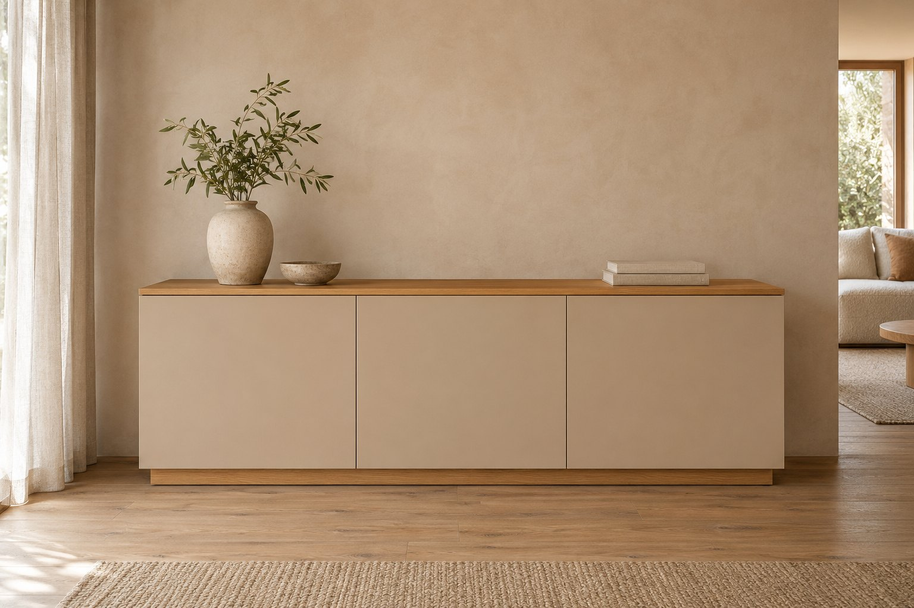

Тумба «Линия»
Низкая горизонтальная тумба

Низкая тумба оставляет свободной поверхность стены. За фасадами можно хранить посуду, документы или технику, а сверху разместить светильник и несколько предметов декора. Если тумба нужна для техники, положение отверстий для проводов согласуется заранее.
Характеристики
- Конфигурация
- Низкая горизонтальная тумба
- Установка
- Напольная тумба на утопленном цоколе
- Секции
- Три закрытых отделения
- Наполнение
- Полки и проходы для кабелей по проекту
Возможные материалы
- Корпус из ЛДСП
- Песочные матовые фасады из МДФ
- Детали с фактурой дуба
Преимущества
- Горизонтальный силуэт подходит для свободной стены
- Закрытые секции скрывают содержимое